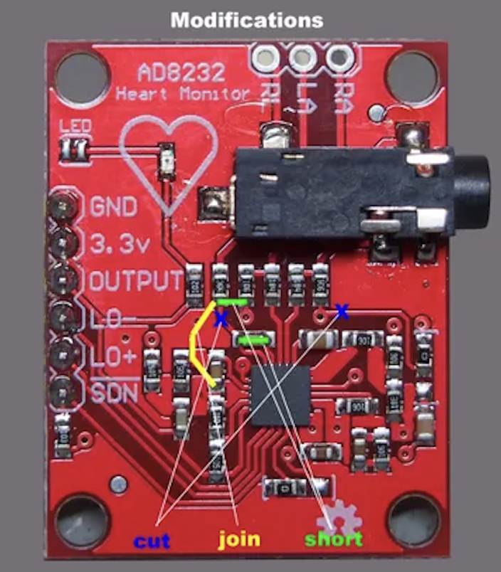
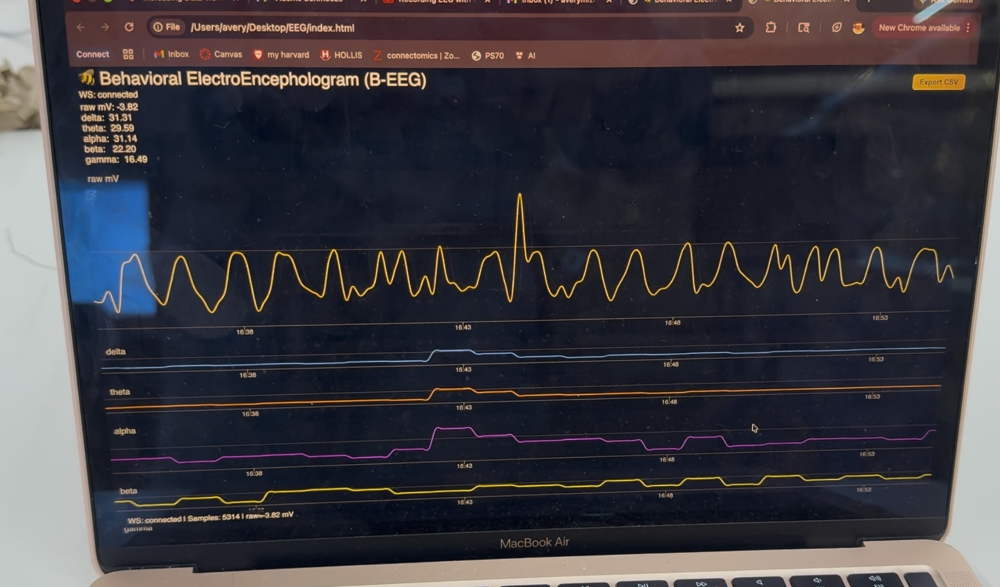

Behavioral ElectroEncephalogram (B-EEG) 🐝
Introduction & MVP
From the beginning, I was excited to create my own version of a brain-computer interface (BCI) - see my initial ideas . I started off by creating a heart rate monitor with a digital interface as a proof of concept - see my Minimum Viable Product and bluetooth improvement. After succeeding, I worked with Kassia Love to custom-build an EEG BCI designed to detect electrical activity from the scalp, amplify and filter the signal, and stream data to a computer for visualization and analysis (see details here). We did this through modifying a heart rate monitor and detecting when eyes are open versus closed! See my video of inspiration below for my EEG:


void loop() {
if (pulseSensor.sawStartOfBeat()) {
int bpm = pulseSensor.getBeatsPerMinute();
Serial.println(bpm);
if (deviceConnected) {
char buffer[8];
sprintf(buffer, "%d", bpm);
pCharacteristic->setValue(buffer);
pCharacteristic->notify();
}
}
}
Circuit




The first step is to properly wire up the circuit based on some initial instructions available here. It requires modifying a heart rate board, seen above, which joins and disrupts some connections. Then the EEG can compare between two electrodes, and be ready to record from the occipital lobe (where vision takes place on the back of the head), as seen in the diagram above. Then I soldered the wires to metal and sewed it to the headband. I was able to do some preliminary recordings which can be seen in the chart.
- Aquire materials: headband, heartrate monitor, breadboard, rivets, wires
- Modify heartrate monitor: solder to join/short/cut, and test with multimeter to make sure it is correct
- Additional components: add ESP32 to breadboard and sew rivets into headband to start recording activity with ground electrode on neck
- Basic arduino code: upload to see raw signals for all the different waves and make sure serial print is working
- Export and make graphs: to see what differences are between different bands and if there is a difference between eyes open/closed
Code and Signal Denoising

float rawMv = (float)vReal[SAMPLES - 1];
// --------- FFT + INSTANT BAND POWERS ---------
FFT.windowing(FFTWindow::Hamming, FFTDirection::Forward);
FFT.compute(FFTDirection::Forward);
FFT.complexToMagnitude();
deltaBP = bandPower(DELTA_LOW, DELTA_HIGH);
thetaBP = bandPower(THETA_LOW, THETA_HIGH);
alphaBP = bandPower(ALPHA_LOW, ALPHA_HIGH);
betaBP = bandPower(BETA_LOW, BETA_HIGH);
gammaBP = bandPower(GAMMA_LOW, GAMMA_HIGH);
I used the website/Kassia's code as a starting point. Once I got serial print to print signals working, I added bluetooth to the arduino so that the noise from the computer wouldn't interfere. I was able to get the bluetooth to connect to my website: arduino file to set up the serial print, python EEGserver.py in terminal to set up connection, and then using html go to the index. The website displayed the raw signal, which is easiest to see changes in, in addition to alpha/beta/delta/gamma/theta. Problems arised (trying to train a model to predict eyes open versus closed & very noisy data), but we were ultimately able to see small differences and record actual data! To run 1) upload arduino, 2) run python server, 3) double click index file to bring up website page.
- Add bluetooth to arduino: find ESP32 bluetooth settings, figure out how to connect to computer, and ID to Arduino websocket
- Code Python code: make a server with proper ID that gets signals from band
- Make HTML: make basic interface to see all different signals, so that when you hover you can see all bands
- Testing and denoising: try Relative Power, smoothing, band pass, transmitting data at different speeds, calculating estimations, and hours worth of testing to find the best parameters for display
Housing and Final Touches


Finally after getting a working version via bluetooth, I miniturized by soldering the heart rate monitor, lipobattery, and ESP32 on a protoboard. I sewed a small pouch onto the headband, in addition to sewing rivets and the wires to be hidden. This way, the headband connects via bluetooth with no additional bulky parts.
- Recreate to minituraize: resolder new heart rate monitor and test with multimeter, add to breadboard with ESP32
- Battery: Test and include lipobattery for miniturization
- Sew headband: Sew rivets onto headband, sew wires to be hidden, and small pouch to fit all materials
Final Videos and Other Projects
Thank you Nathan for your excellent teaching, Kassia for all your EEG help, Bobby for being a test subject and being available, the PS70 teaching staff for their dedication, and my classmates for inspiring me!